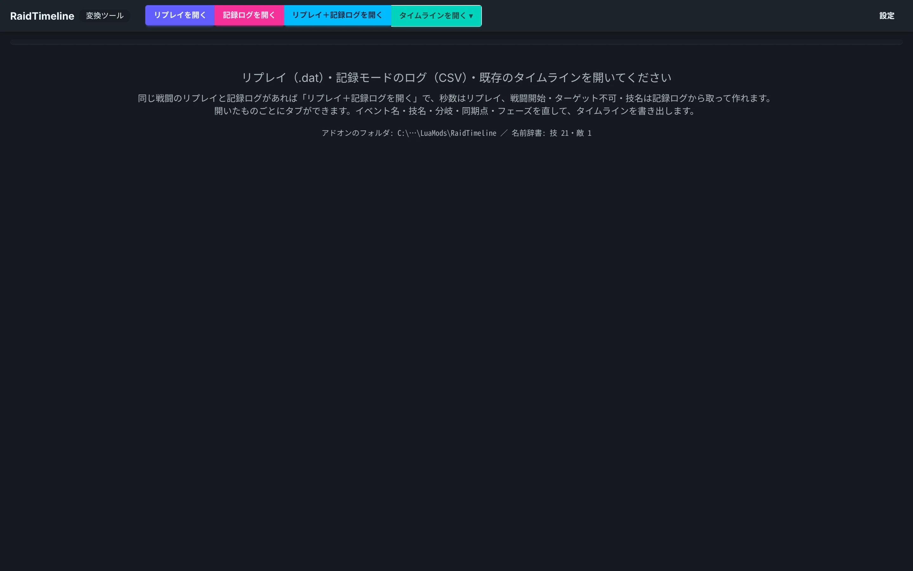

はじめかた
アドオンを入れて、付属のサンプルでドライランを動かすところまで。だいたい 5 分です。
用意するもの
| もの | 説明 |
|---|---|
| Lua アドオンを動かす環境 | LuaMods フォルダにアドオンを置いて動かすタイプのもの。このアドオンはその上で動きます。 |
| Windows 10 / 11 | 変換ツールを使うとき。画面の表示に Microsoft Edge WebView2 ランタイムを使います（Windows 11 なら最初から入っています）。 |
| wav ファイル（任意） | 音を鳴らしたいとき。手持ちの短い効果音で大丈夫です。 |
アドオンを入れる
- zip をダウンロード
Releases から
RaidTimeline-addon-<版>.zipをダウンロードします。 - LuaMods に展開
中の
RaidTimelineフォルダごと、LuaModsフォルダに置きます。次の形になれば OK です。LuaMods\ └─ RaidTimeline\ ├─ RaidTimeline.lua ├─ module.def └─ timelines\ ├─ 1323_draft.lua └─ 1325_draft.lualogs・plans・wavなどのフォルダは、使ったときにアドオンが作ります。 - 読み込み直す Lua を読み込み直す（または起動し直す）と、上のメニューに RaidTimeline が出ます。
メニュー
メニューの RaidTimeline から 4 つの画面を開けます。
| メニュー | 画面 | 使うとき |
|---|---|---|
Recorder | 記録モード・設定 | 戦闘を記録する（変換ツールの材料）。 |
Dry-run | ドライラン | タイムラインとプランで動かす。実行・音のスイッチ、判定の結果、各種の設定。 |
Timeline | タイムライン表示 | 次に来る技を、残り時間のバーで見る。 |
Plan | プラン編集 | 技ごとに、使うアクションや音を決める。 |
キーの割り当てに RaidTimeline Pause が増えます。キーを割り当てておくと、戦闘中に「実行」をすぐ一時停止・再開できます。
サンプルで試す
付属のサンプルは 2 つ（mapid 1323 と 1325）です。
- ドライランを ON
Dry-runの画面で「ドライラン」を ON にします。「実行する（oGCD）」は OFF のままにしておきます（使ったことにするだけ）。 - プランを作る
Planの画面の「プランを選ぶ」で、マップとジョブを選んで「… を作る」を押します。技の行の「追加」から、使うアクションと秒数を決めます（プラン編集）。 - 戦ってみる そのコンテンツに入って戦うと、ドライランの画面に「いつ・何を・どうした」が並びます。思ったとおりなら「実行する（oGCD）」を ON にします。
最初はかならずドライランで確かめてから、実行を ON にしてください。タイムラインがずれていると、意図しない時刻にアクションを使います。
変換ツールを入れる
- zip をダウンロードして展開
RaidTimelineTool-<版>-win64.zipを好きな場所（例：C:\Tools\RaidTimelineTool）に展開します。 - exe を起動
RaidTimelineTool.exeを起動します。初めてのときは「発行元が不明」の確認が出ることがあります（署名していないため）。 - はじめの設定
アドオンのフォルダ（
LuaMods\RaidTimeline）は、C〜Z ドライブから自動で探します。見つからなかったときは設定の画面が開くので、「選ぶ」で指定して「保存」します。

使い方は 変換ツール のページへ。
新しい版にする
- アドオン：
RaidTimeline.luaとmodule.defを上書きします。timelines・plans・logs・wav・settings.luaは自分のものなので、そのまま残してください。 - 変換ツール：フォルダごと入れ替えます。設定は exe の隣の
RaidTimelineTool_settings.jsonにあるので、新しいフォルダにコピーすれば引き継げます。 - 何が変わったかは CHANGELOG にあります。